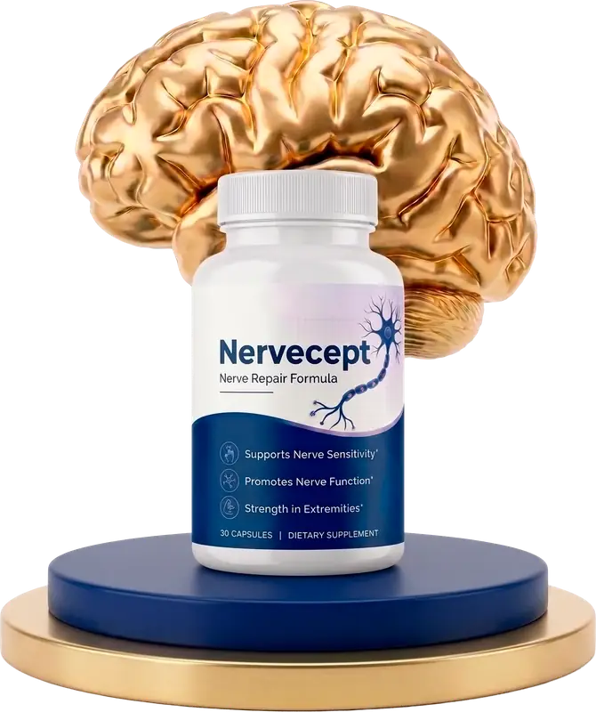
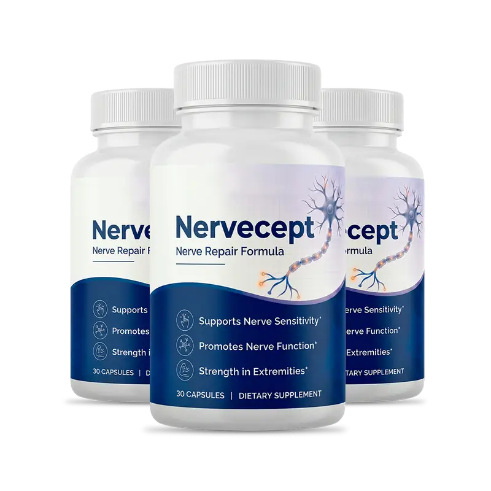
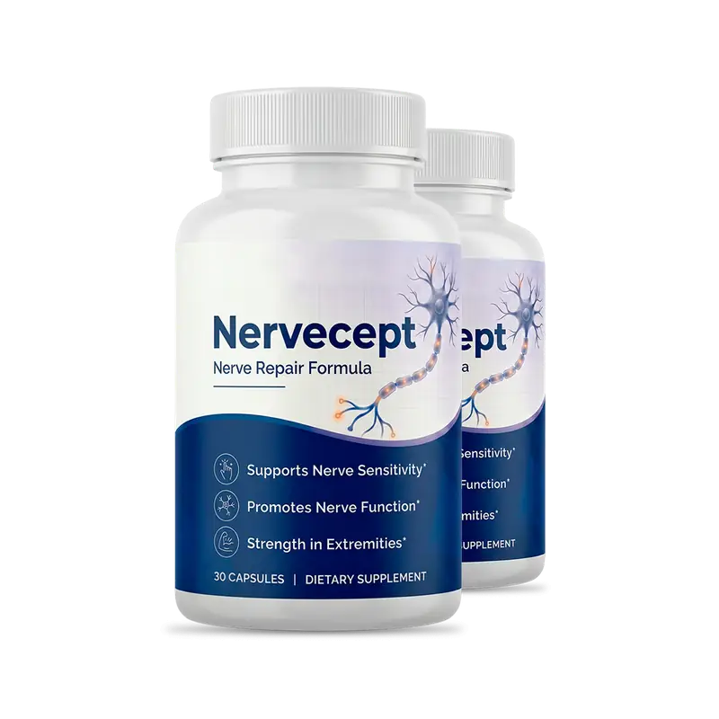
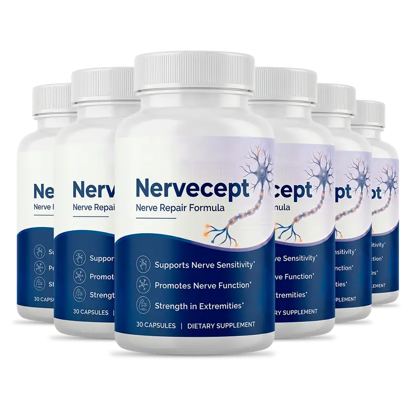
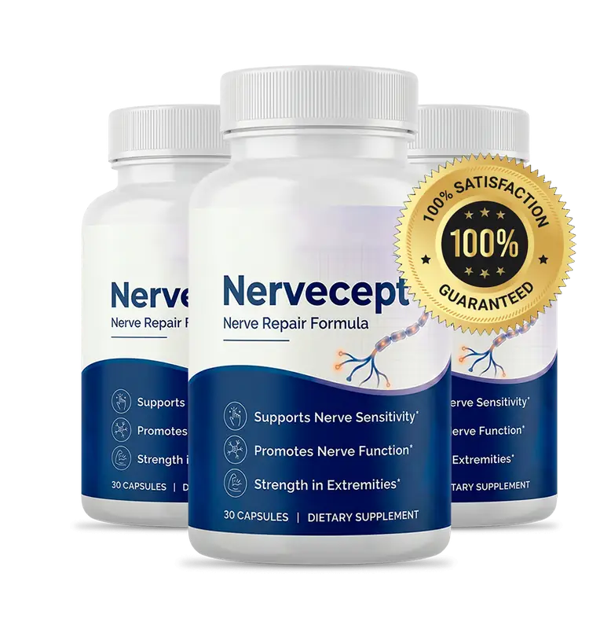

Capsules · 30 per bottle · Adults 18+ · One a day · Contains shellfish
Nervecept: A Daily Capsule That Supports Nerve Sensitivity, Nerve Function And Everyday Comfort
Nervecept is a once-daily capsule for adults who want a simple habit beside regular movement, good sleep and proper check-ups. You swallow one capsule with a glass of water, ideally before a meal. The bottle calls it a "Nerve Repair Formula" and lists three goals, and the label prints every amount, which is to its credit. We read the formula more carefully: it is a dietary supplement, not a treatment for neuropathy or nerve damage, it contains shellfish, no result is promised, and numbness, tingling or burning need a doctor before any supplement. This page walks through the label, sets each amount beside the amounts studied, flags the allergy and medicine cautions, and lays out the prices and the 60-day refund steps.*
- One capsule a day, every amount printed on the label
- A full Supplement Facts label to read line by line
- Free US shipping on 3 and 6 bottles
- A 60-day money-back guarantee
- 1Checkfor a shellfish allergy
- 2Seea doctor about symptoms
- 3Askyour pharmacist about medicines
- 4Takeone capsule with water
| Allergic to shellfish? | Do not use |
| Numbness, tingling or burning? | See a doctor first |
| On blood thinners or diabetes pills? | Ask first |
Secured payment • Encrypted checkout • 60-day guarantee
Related: A joint formula, a nerve label · FAQ · The blog
*These statements have not been evaluated by the Food and Drug Administration. This product is not intended to diagnose, treat, cure or prevent any disease.

An animated teaching sketch, not data. Illustration.
At A Glance
What The Nervecept Seller Says About Quality
These are the seller's statements, reported as stated.
Made In The USA
With foreign and domestic ingredients, per the badge.
GMP Practice
Good Manufacturing Practice, per the brand.
FDA-Registered Facility
Not an FDA approval of the product.
Non-GMO Capsule
A vegetable capsule, per the seller.
No "FDA approved" seal appears here, because the FDA does not approve dietary supplements. See the quick answers and the label line by line.
Check the allergen first, then the checkout.
60-day guarantee · Buying checklist · Pack prices
What Is It
What Is Nervecept, As Shown On The Bottle And Page?
Nervecept comes in a white bottle with a navy label reading "Nerve Repair Formula", 30 capsules to a bottle.*
The label prints eight amounts, led by 500 mg of glucosamine sulfate, and says it contains shellfish (crayfish). The ingredients are the classic joint-comfort set, which is not the same as a nerve formula.
It is a dietary supplement for adults: not a drug, not FDA approved and not a treatment for neuropathy or any other condition.
Related: The eight ingredients · The dose gap · The label
Read The Ingredients
Seller artwork, as supplied.
Pricing
Nervecept Prices: From $49 A Bottle
Three packs, with free US shipping on the larger two.
Starter

- 60 days, 60 capsules
- Plus shipping
- 60-day guarantee, bottles returned
Popular
- 90 days, 90 capsules
- Free US shipping
- 60-day guarantee, bottles returned
Best Value

- 180 days, 180 capsules
- Free US shipping
- 60-day guarantee, bottles returned
Against $79 bottles, three bottles save $10 each and six save $30 each. The seller also strikes through $358, $537 and $1,074 and prints "You save" figures, which nobody is shown paying, so we leave them out. Confirm the final total and terms at checkout. Pack prices · Buying checklist · Shipping info

Sixty Days
Nervecept's 60-Day Money-Back Guarantee, And Returning Bottles
The seller advertises a 100% money-back guarantee for 60 days from the purchase date. You email its support team and send the bottles back, full, partly used or empty, for a refund of the purchase price.
Keep the bottles and packaging, ask support where to send them, and set a reminder around day 45. See the refund policy and the sixty-day refund steps.
Check A Pack With A Guarantee The steps in detail →Before You Start
Before Your First Nervecept Capsule: A Short Checklist
Five minutes that matter more than the first week.
Related: Shipping info · Refund policy · Pregnancy and teens
How It Works
How Nervecept Is Meant To Be Used: One Capsule A Day
The label directions: take one capsule daily with an 8 oz glass of water, for best results 20 to 30 minutes before a meal, or as directed by your healthcare professional. Do not exceed the recommended dose.*
- Check for a shellfish allergy first.
- See a doctor about any numbness, tingling or burning.
- Ask your pharmacist about your medicines.
- Take one capsule with a full glass of water.
- Decide inside the 60-day window.
Related: The daily capsule routine · The refund steps · How to judge claims
One capsule inside an ordinary day. Illustration.
The seller's four-step story says the formula cushions the tissue around nerves, calms irritable nerves and defends nerve cells. No trial links these amounts to nerve symptoms, so we do not repeat it. Why →
Ingredients
Inside Nervecept: Eight Ingredients, Every Amount Printed
What each is and what to watch for. The ingredients in detail →
The Label At A Glance
All eight amounts, and an allergen.

| Nervecept Supplement Facts, as printed | Amount per capsule |
|---|---|
| Serving size | 1 capsule |
| Servings per container | 30 |
| Glucosamine sulfate | 500 mg |
| Indian frankincense (Boswellia serrata) herb | 67 mg |
| Chondroitin sulfate | 50 mg |
| Turmeric (Curcuma longa) root | 50 mg |
| Quercetin (Sophora japonica) bud | 8 mg |
| Methionine | 8 mg |
| Methylsulfonylmethane (MSM) | 8 mg |
| Bromelain (Ananas comosus) stem | 8 mg |
| Other ingredients | Hypromellose (vegetable capsule), rice flour |
| Allergen | CONTAINS: SHELLFISH (CRAYFISH) |
How to read it: the Daily Value is "not established" for every line. All eight amounts are printed, which is a plus, and the total of the active amounts is about 700 mg.
Directions (label): take one capsule daily with an 8 oz glass of water, for best results 20 to 30 minutes before a meal, or as directed by your healthcare professional. Do not exceed the recommended dose. Store in a cool, dry place away from heat and light. Keep out of reach of children.
Label amounts against typical trial amounts. Illustration.
General research strength. Illustration.
A fair summary: glucosamine is at a third of a typical joint-trial dose, chondroitin, MSM and turmeric are far below theirs, the 8 mg items are food-sized, and no trial of this capsule in nerve symptoms is known.* See the blog on glucosamine, boswellia, turmeric and MSM.
Allergic to shellfish, or on blood thinners? Ask first.
Honest information first · Shellfish allergy · Blood thinners
Safety
Nervecept Safety: Shellfish, Nerve Symptoms, Bleeding And Medicines
Six reasons to ask first.
Shellfish First
The label says it contains shellfish (crayfish). Several ingredients may also touch clotting, blood sugar and how some medicines work. Keep each prescription as your clinician set it. See shellfish allergy and medicines to check.
Illustration.
Illustration.
A Capsule Is Not A Diagnosis
Numbness, tingling and burning have causes that need finding. See numbness, tingling and burning.
| If you | Then |
|---|---|
| Are allergic to shellfish | Do not use. See shellfish allergy. |
| Have numbness, tingling or burning | See a doctor first. See numbness and tingling. |
| Take warfarin, apixaban, aspirin or other thinners | Ask first. See blood thinners and bleeding. |
| Have diabetes | Tell your clinician. See diabetes and blood sugar. |
| Are pregnant, nursing, under 18 or have a condition | Do not start without a doctor. See pregnancy, teens, conditions. |
| Have sudden weakness, a drooping face or trouble breathing | Seek emergency care at once. |
See A Doctor Soon For
Numbness that spreads or lasts weeks, burning that wakes you, a weak grip, dropping things, tripping, or sores you cannot feel.
Keep It Away From Children
Store the bottle cool and dry, away from heat and light, and out of reach.
Illustration.
Benefits
What Nervecept Aims To Support, And Where It Stops
Goals, never promises. The support goals →
Strength in the extremities
Depends on muscle and tendons.
A trial window
A 60-day money-back guarantee.
Illustrative emphasis, not measured.
A Diagnosis Carries The Weight
Finding and treating the cause of nerve symptoms matters far more than a supplement. See numbness, tingling and burning and what Nervecept aims to support.
Choose Your Pack
Comparing Nervecept Packs By Cost Per Day
The lowest per-bottle price, $49, is on the six bottle pack.
Starter
- 60 days, 60 capsules
- Plus shipping
- 60-day guarantee, bottles returned
Popular
- 90 days, 90 capsules
- Free US shipping
- 60-day guarantee, bottles returned
Best Value
- 180 days, 180 capsules
- Free US shipping
- 60-day guarantee, bottles returned
Cost per day before shipping. Illustration.
The Sums
Two bottles are $158 plus shipping, three are $207 and six are $294, with free US shipping on the last two. At one capsule a day that is about $2.63, $2.30 and $1.63 a day. See pack prices.
Start Small If Unsure
If you are unsure about the shellfish ingredient or your medicines, the 2 bottle pack is the careful start. See the buying checklist and the refund steps.
Sixty days. Illustration.
Customer Reviews
Nervecept Customer Reviews: Questions And Honest Answers
Individual buyers cannot be verified, so no star ratings, counts or named testimonials appear here, and the portraits supplied are illustrative images only. The seller's page prints three "verified buyer" stories about tingling, steadier feet and better sleep, which describe symptoms of a medical condition, and we do not repeat them. Verified reviews will be added when they can be shown in full, critical ones included.
Illustrative image, not a customer.
I am allergic to shellfish. Can I take it?
No. The label says CONTAINS: SHELLFISH (CRAYFISH), because glucosamine is made from shells. Ask your doctor or allergist if you are unsure.
Illustrative image, not a customer.
Why does a joint-type formula say nerve repair?
Glucosamine, chondroitin, MSM, boswellia, turmeric and bromelain are classic joint-comfort ingredients. No trial links these amounts to nerve repair, so we treat the bottle wording as a goal.
Illustrative image, not a customer.
I have burning or tingling in my feet. Will it help?
See a doctor first. Those symptoms have causes, such as diabetes or low B12, that need finding and treating. We do not repeat the seller's stories about tingling and steadier feet.
Send yours
Used Nervecept? Email contact@nervecept.com with your order number and an honest account, kind or critical. Verified reviews can appear here.
Common questions
Shellfish, medicines, nerve symptoms and refunds. See the quick answers.
Solid facts
The label, the prices and the refund steps are spelled out here and in the blog.
Questions
Nervecept Questions, Answered Carefully
What is Nervecept?
A once-daily capsule with eight listed ingredients, marketed to support nerve sensitivity, nerve function and comfort in the hands and feet.
What does the label list?
Glucosamine sulfate 500 mg, Boswellia 67 mg, chondroitin 50 mg, turmeric root 50 mg, and quercetin, methionine, MSM and bromelain at 8 mg each.
Does it contain shellfish?
Yes. The label says CONTAINS: SHELLFISH (CRAYFISH), so it is not for anyone with a shellfish allergy.
How do I take it?
One capsule daily with an 8 oz glass of water, for best results 20 to 30 minutes before a meal.
Does it treat neuropathy?
No. It does not treat, cure or reverse neuropathy or nerve damage.
Why does a joint-type formula say nerve repair?
The ingredients are a classic joint-comfort set. The bottle says "Nerve Repair Formula", but no trial links these amounts to nerve repair.
Is it FDA approved?
No. Supplements are not. The seller only says it is made in an FDA-registered facility.
Who should ask a doctor first?
Anyone on blood thinners, diabetes medicine, antibiotics or chemotherapy, pregnant, nursing, or under 18.
What does it cost?
$79, $69 or $49 a bottle for 2, 3 or 6 bottles: $158 plus shipping, $207 or $294.
Is it a subscription?
The seller shows each pack as a one-time price; confirm on the checkout page.
How does the guarantee work?
60 days from purchase: email support and send the bottles back, full, partly used or empty.
When should I see a doctor?
For numbness or burning that spreads or lasts, weakness, tripping, or sudden changes.
From The Blog
The Nervecept Notebook: Ten Linked Entries
Each ingredient, the dose gap, neuropathy causes and how to judge claims.
Glucosamine Sulfate: What Studies Show
Joint trials.
LabelChondroitin And The Dose Gap
50 mg against 1,200.
IngredientsBoswellia Serrata: The Evidence
Small trials.
IngredientsTurmeric, Curcumin And Absorption
Little curcumin.
IngredientsQuercetin: Evidence And Limits
8 mg.
IngredientsMSM: The Evidence
8 mg against grams.
SafetyBromelain Enzymes: The Evidence
Cautions too.
LabelMethionine In A Small Dose
Food covers it.
HealthPeripheral Neuropathy: Causes And Care
Find the cause.
ClaimsHow To Judge Nerve Supplement Claims
Four questions.
Ready When You Are
Start With Your Doctor, Then Choose Nervecept
One capsule a day, every amount printed on the label and a 60-day money-back guarantee, from $49 a bottle on the six bottle pack. Order once you have checked the shellfish warning, seen a doctor about any numbness or burning, and compared the label with your own medicines. See the buying checklist and pack prices.
- Contains shellfish
- See a doctor about symptoms first
- Most amounts are far below study doses
- No promise of results
The Label
The Nervecept Label Details, As Printed On The Bottle
Eight amounts and an allergen. Line by line →
| Nervecept Supplement Facts, as printed | Amount per capsule |
|---|---|
| Serving size | 1 capsule |
| Servings per container | 30 |
| Glucosamine sulfate | 500 mg |
| Indian frankincense (Boswellia serrata) herb | 67 mg |
| Chondroitin sulfate | 50 mg |
| Turmeric (Curcuma longa) root | 50 mg |
| Quercetin (Sophora japonica) bud | 8 mg |
| Methionine | 8 mg |
| Methylsulfonylmethane (MSM) | 8 mg |
| Bromelain (Ananas comosus) stem | 8 mg |
| Other ingredients | Hypromellose (vegetable capsule), rice flour |
| Allergen | CONTAINS: SHELLFISH (CRAYFISH) |
How to read it: the Daily Value is "not established" for every line. All eight amounts are printed, which is a plus, and the total of the active amounts is about 700 mg.
Directions (label): take one capsule daily with an 8 oz glass of water, for best results 20 to 30 minutes before a meal, or as directed by your healthcare professional. Do not exceed the recommended dose. Store in a cool, dry place away from heat and light. Keep out of reach of children.
A dietary supplement cannot be FDA approved. Read the directions and warnings on your own bottle, and see the health disclaimer.
References
Independent Reading For Nervecept Shoppers
None of them tested Nervecept itself. Our blog digs into each part →
These organizations do not endorse, sponsor or have any affiliation with Nervecept or this website. See also the health disclaimer.